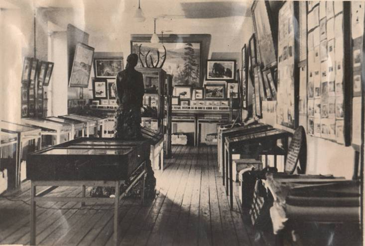
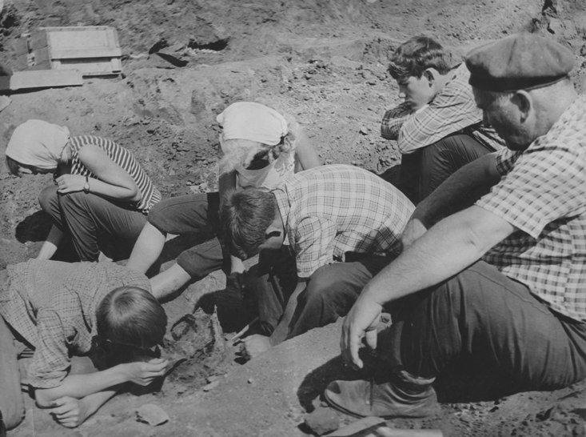
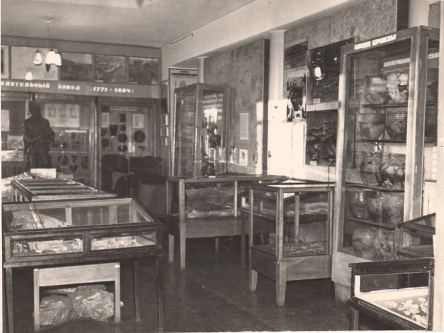

История музея

Прокопьевский городской краеведческий музей был создан 14 августа 1961 года на базе межшкольного музея краеведения, действовавшего с 1953 года в школе № 1, а с 1956 года – во Дворце пионеров. Основателем и первым директором музея был заслуженный учитель школы РСФСР Михаил Георгиевич Елькин (1913–1987гг.).

За 26 лет существования Общества «Юный историк», созданного М.Г. Елькиным, юные краеведы провели 24 археологические экспедиции, A11в которых приняли участие 1127 учащихся, совершили 5 крупных научных открытий. Кроме того были проведены несколько палеонтологических экспедиций, 4 экспедиции на территорию Томского железоделательного завода и походы по местам партизанских боев периода гражданской войны. С 1964 года музей занимает 1-й этаж жилого дома по проспекту Шахтёров, 63.

Оформлением первой экспозиции музея в 1960-е годы занимался прокопьевскийis художник Г.В. Стаценко. Действующая ныне экспозиция открылась для посетителей в 1989 году. Автором генерального проекта стал выпускник Иркутского художественного училища М.В. Перепечин. Фотодизайн выполнен выпускником ВГИКа, лауреатом международных фотоконкурсов О. И. Дериглазовым.
В рамках подготовки к празднованию 70-летия Кемеровской области в 2012 году открыт зал «Космос», уникальным экспонатом которого является подлинный космический спускаемый аппарат с ложементами для трех космонавтов. А в день рождения области 26 января 2013 года представлены новые современные экспозиции зала «Становление города Прокопьевска».
Оформление экспозиций новых залов выполнили художники: Е.Н. Бабкин, член Союза художников России Кемеровское отделение, лауреат премии Кузбасса; П.Д. Веремеев, член Союза художников России Кемеровское отделение; В.Я. Атучин, лауреат премии Кузбасса; О.Б. Иноземцев; А.П. Веремеев.
Материалы музея и статьи научных сотрудников публикуются в городской прессе и в популярных краеведческих альманахах «Разыскания», журнале «Уголь Кузбасса», в сборниках тематических межвузовских конференций.
Сотрудники музея принимают постоянное участие в музейных конкурсах.
В 2007 году Прокопьевский городской краеведческий музей стал лауреатом конкурса «Музей года».
В 2008 году - удостоен диплома победителя областного конкурса «Лучшее музейное учреждение» в номинации «Проект года».
В 2010 году музей стал победителем конкурса «Воины шахтеры и угледобытчики в Великой Победе», объявленного Департаментом культуры и национальной политики Кемеровской области, Департаментом угольной промышленности и энергетики Кемеровской области и Фондом «Шахтерская память» имени В.П. Романова.
В 2014 году музей награжден сертификатом на 100 тысяч рублей за участие в проекте "Золотое кольцо Кузбасса".
Назад